전기공사기사 (2010-03-07 기출문제)
1과목: 전기응용 및 공사재료
1. 교류자계 중 전도성 물체에 생기는 와전류에 의한 저항손 또는 히스테리시스손을 이용하여 가열하는 방식은?
- 유전 가열
- 복사 가열
- 저항 가열
- 유도 가열
(정답률: 73%)

2. 전철 전동기에 감속 기어를 사용하는 이유로 가장 적합한 것은?
- 동력전달을 위해
- 전동기의 소형화를 위해
- 역률개선을 위해
- 가격저하를 위해
(정답률: 63%)
3. 하역 기계에서 무거운 것은 저속으로, 가벼운 것은 고속으로 작업하여 고속이나 저속에서 다 같이 동일한 동력이 요구되는 부하는?
- 정토크 부하
- 제곱토크 부하
- 정동력 부하
- 정속도 부하
(정답률: 85%)
4. 서미스터의 주된 용도는?
- 온도 보상용
- 잡음 제거용
- 출력 전류 조절용
- 전압 증폭용
(정답률: 86%)
5. 다음 설명 중 옳은 것은?
- DIAC은 NPN 3층으로 되어있고 쌍방향으로 대칭적인 부성 저항을 나타낸다.
- SCR은 PNPN이라는 2층의 구조로 되어 있다.
- 트라이액은 2극 쌍방향 사이리스터로 되어 있다.
- SSS는 3극 쌍방향 사이리스터로 되어 있다.
(정답률: 74%)
6. 특수강의 제조에 가장 적당한 전기로는?
- 저주파 유도로
- 고주파 유도로
- 저항로
- 아크로
(정답률: 59%)
7. 산·알칼리 또는 유해가스를 취급하는 장소에서 사용되는 전동기는?
- 방적형 전동기
- 방수형 전동기
- 방폭형 전동기
- 방부형 전동기
(정답률: 76%)
8. 휘도가 균일한 긴 원통 광원의 축 중앙 수직 방향 광도가 100[cd]일 때 전광속 F[lm]과 평균 구면 광도 l[cd] 값은 약 얼마인가?
- F = 628, I = 79
- F = 986, I = 79
- F = 986, I = 59
- F = 628, I = 59
(정답률: 66%)
9. 물을 전기분해하면 음극에서 발생하는 기체는?
- 산소
- 질소
- 수소
- 이산화탄소
(정답률: 86%)
10. 25℃의 물 10L를 그릇에 넣고 2kW의 전열기로 가열하여 물의 온도를 80℃로 올리는 데 20분이 소요되었다. 이 전열기의 효율은 약 몇 [%]인가?
- 59.5
- 68.8
- 84.9
- 95.9
(정답률: 69%)
11. 피뢰침용 인하도선으로 가장 적당한 전선은?
- 고무 절연전선
- 비닐 절연전선
- 캡타이어 케이블
- 동선
(정답률: 83%)
12. 동전선의 접속 중 슬리브에 의한 접속 방법이 아닌 것은?
- S형 슬리브에 의한 직선접속
- S형 슬리브에 의한 분기접속
- 매킹타이어 슬리브에 의한 직선접속
- S형 슬리브에 의한 종단접속
(정답률: 58%)
13. 접지 저감재가 구비하여야 할 요소가 아닌 것은?
- 전극을 부식시키지 않을 것
- 전기적인 부도체일 것
- 지속성이 있을 것
- 안전성을 고려할 것
(정답률: 89%)
14. 예비전원으로 시설하는 축전지에서 부하에 이르는 전로에는 무엇을 시설하여야 하는가?
- 계기용 변압기
- 개폐기 및 과전류차단기
- 계기용 변류기
- 계기용 변성기
(정답률: 87%)
15. 사용전압이 400[V] 이상인 저압 옥내 배선시 금속 관에 시행하는 접지 공사의 종별은?(관련 규정 개정전 문제로 여기서는 기존 정답인 4번을 누르면 정답 처리됩니다. 자세한 내용은 해설을 참고하세요.)
- 제1종 접지공사
- 제2종 접지공사
- 제3종 접지공사
- 특별 제3종 접지공사
(정답률: 64%)
16. 피뢰설비에 대한 설명으로 옳은 것은?
- 접지극은 인하도선 아래쪽의 상수면아래에 매설한다.
- 피뢰침의 접지저항은 5[Ω]이하로 한다.
- 피뢰도선은 가스관에서 1.0[m]이상 이격한다.
- 접지극은 아연도금철판 사용시 두께 3mm 이상, 면적 0.5[m2]이상 편면이어야 한다.
(정답률: 60%)
17. 다음 중 절연의 종류에서 최고 허용 온도[℃]가 가장 높은 것은?
- A
- B
- H
- E
(정답률: 87%)
18. 금속을 아우트랫 박스의 로크아웃에 취부할 때 로크아웃의 구멍이 관의 구멍보다 클 때 보조적으로 사용 되는 것은?
- 링 리듀서
- 엔트런스 캡
- 부싱
- 엘보
(정답률: 83%)
19. 수변전 설비의 전력 퓨즈(PF)가 차단기(CB)와 비교 할 때의 특징으로 볼 수 없는 것은?
- 가격이 싸다.
- 차단용량이 적다.
- 보수가 용이하다.
- 소형이며 경량이다.
(정답률: 82%)
20. 금속 덕트에 넣는 전선의 단면적(절연피복의 단면적 포함)의 합계는 덕트 내부 단면적의 몇[%] 이하이어야 하는가?
- 10
- 20
- 30
- 40
(정답률: 78%)
2과목: 전력공학
21. 6.6kV 3상3선식 배전선로에서 완전 1선 지락고장이 발생 하였을 때 GPT 2차에 나타나는 전압[V]은? (단, GPT는 변압기 3대로 구성되어 있으며, 변압기의 변압비는
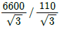
V이다.)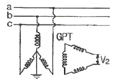
- 110/√3
- 110[V]
- 110√3
- 330[V]
(정답률: 18%)
22. 가공선로에 사용하는 전선의 구비조건으로 바람직하지 않은 것은?
- 비중(밀도)이 클 것
- 도전율이 높을 것
- 신장률이 클 것
- 기계적인 강도가 클 것
(정답률: 24%)
23. 송전전력, 송전거리, 전선의 비중 및 전력 손실률이 일정하다고 할 때, 전선의 단면적 A[mm2]은? (단, V는 송전전압이다.)
- V 에 반비례
- √V 에 비례
- V2 에 반비례
- V2 에 비례
(정답률: 21%)
24. ( ㉮ ), ( ㉯ )에 들어갈 내용으로 알맞은 것은?
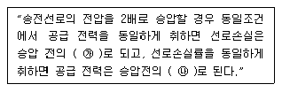
- ㉮ 1/4, ㉯ 4배
- ㉮ 1/2, ㉯ 4배
- ㉮ 1/4, ㉯ 2배
- ㉮ 1/2, ㉯ 2배
(정답률: 19%)
25. 동기조상기와 전력용 콘덴서를 비교할 때 전력용 콘덴서의 이점으로 알맞은 것은?
- 진상전류 및 지상전류 양용이다.
- 단락고장이 생겼을 때 고장전류가 흐르지 않는다.
- 송전선로의 무부하 충전시 송전에 이용 가능하다.
- 전압조정이 연속적이다.
(정답률: 17%)
26. 직접 접지방식이 초고압 송전선로에 채용되는 이유로 가장 타당한 것은?
- 계통의 절연 레벨을 저감하게 할 수 있으므로
- 지락시의 지락전류가 적으므로
- 지락고장시 병행 통신선에 유지되는 유도전압이 작기 때문에
- 송전선의 안정도가 높으므로
(정답률: 18%)
27. 피뢰기가 구비하여야 할 조건으로 거리가 먼 것은?
- 시간지연(time lag)이 적을 것
- 충격 방전 개시 전압이 낮을 것
- 방전 내량이 크면서 제한 전압이 높을 것
- 속류 차단 능력이 클 것
(정답률: 20%)
28. 종축에 절대온도 T, 횡축에 엔트로피 S를 취할 때 T-S선도에서 있어서 단열변화를 나타내는 것은?
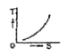
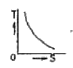
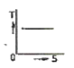
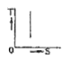
(정답률: 18%)
29. 변전소에서 접지보호용으로 사용되는 계전기에 영상 전류를 공급하기 위하여 설치하는 것은?
- PT
- ZCT
- GPT
- CT
(정답률: 25%)
30. 전력용콘덴서를 변전소에 설치할 때 직렬리액터를 설치하고자 한다. 직렬리액터의 용량을 결정하는 계산식은? (단, f0 는 전원의 기본주파수, C는 역률 개선용 콘덴서의 용량, L은 직렬리액터의 용량이다.)
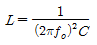
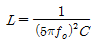
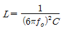
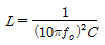
(정답률: 19%)
31. 부하에 따라 전압 변동이 심한 급전선을 가진 배전 변전소에서 가장 많이 사용되는 전압조정장치는?
- 유도전압조정기
- 직렬리액터
- 계기용변압기
- 전력용콘덴서
(정답률: 22%)
32. 송전 선로의 중성점을 접지하는 목적과 거리가 먼 것은?
- 이상 전압 발생의 억제
- 과도 안정도의 증진
- 송전 용량의 증가
- 보호 계전기의 신속, 확실한 동작
(정답률: 23%)
33. 한 상의 대지 정전 용량 0.4[F], 주파수 60[Hz]인 3상 송전선이 있다. 이 선로에 소호 리액터를 설치하려 한다. 소호 리액터의 공진 리액턴스는 약 몇 [Ω]인가?
- 565[Ω]
- 1370[Ω]
- 1770[Ω]
- 2217[Ω]
(정답률: 13%)
34. 단로기에 대한 설명으로 옳지 않은 것은?
- 소호장치가 있어서 아크를 소멸시킨다.
- 회로를 분리하거나, 계통의 접속을 바꿀 때 사용한다.
- 고장전류는 물론 부하전류의 개폐에도 사용할 수 없다.
- 배전용의 단로기는 보통 디스커넥팅바로 개폐한다.
(정답률: 22%)
35. 코로나 방지에 가장 효과적인 방법은?
- 선로의 절연을 강화한다.
- 선간거리를 증가시킨다.
- 복도체를 사용한다.
- 선로의 높이를 가급적 낮춘다.
(정답률: 27%)
36. 소호원리에 따른 차단기의 종류와 그 특성의 연결이 바르지 못한 것은?
- 가스차단기 - 고성능 절연 특성을 가진 SF 가스를 소호 매질로 이용하는 차단기로 소호 능력이 공기의 100배 이상이며, 차단시 소음은 문제가 되지 않는다.
- 공기차단기 - 압축된 공기를 아크에 불어 넣어서 소호하는 차단기로 압력이 높아짐에 따라 절연 내력이 증가하며, 차단시 소음이 작다.
- 유입차단기 - 절연 내력이 높은 절연유를 이용하여 차단시에 발생하는 아크를 소호시키는 방식으로 탱크형 과 애자형이 있다.
- 진공차단기 - 진공 중에 차단동작을 하는 개폐기로 절연 내력이 높고 화재 위험이 없으며, 소형 경량이다.
(정답률: 20%)
37. 전선에 교류가 흐를 때의 표피효과에 관한 설명으로 옳은 것은?
- 전선은 굵을수록, 도전율 및 투자율은 작을수록, 주파수는 높을수록 커진다.
- 전선은 굵을수록, 도전율 및 투자율은 클수록, 주파수는 높을수록 커진다.
- 전선은 가늘수록, 도전율 및 투자율은 작을수록, 주파수는 높을수록 커진다.
- 전선은 가늘수록, 도전율 및 투자율은 클수록, 주파수는 높을수록 커진다.
(정답률: 21%)
38. 수력발전소의 댐을 설계하거나 저수지의 용량 등을 결정하는데 가장 적당한 것은?
- 유량도
- 적산유량곡선
- 유황곡선
- 수위유량곡선
(정답률: 21%)
39. 과전류계전기는 그 용도에 따라 적절한 동작 시한(time limit)이 있는 것을 선정하여야 하는바 그림에서 반한 시형으로 가장 알맞은 것은?
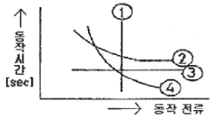
- ①
- ②
- ③
- ④
(정답률: 21%)
40. 정격전압 7.2kV, 차단용량 100MVA인 3상 차단기의 정격 차단전류는 약 몇 [kA]인가?
- 4[kA]
- 6[kA]
- 7[kA]
- 8[kA]
(정답률: 21%)
3과목: 전기기기
41. 주파수가 정격보다 3[%] 상승하고 동시에 전압이 정격보다 3[%] 저하한 전원에서 운전되는 변압기가 있다. 철손이 fBm2(f:주파수, 8m:자속밀도 최대치)에 비례한다면 이 변압기 철손은 정격상태에 비하여 어떻게 달라지는가?
- 약 3.1[%] 증가
- 약 3.1[%] 감소
- 약 8.7[%] 증가
- 약 8.7[%] 감소
(정답률: 14%)
42. 3상 직권정류자 전동기의 특성으로 옳지 않은 것은?
- 직권특성의 변속도 전동기이다.
- 토크는 거의 전류의 제곱에 비례하고 기동토크가 크다.
- 역률은 동기속도 이상에서 저하되며 80%정도이다.
- 효율은 고속에서는 거의 일정하며 동기속도 근처에서 가장 좋다.
(정답률: 16%)
43. 서보 전동기로 사용되는 전동기와 제어방식의 종류가 아닌 것은?
- 직류기의 전압 제어
- 릴럭턴스기의 전압 제어
- 유도기의 전압 제어
- 동기 기기의 주파수 제어
(정답률: 20%)
44. 직류 전동기의 속도 제어법에서 정출력 제어에 속하는 것은?
- 계자 제어법
- 전기자 저항 제어법
- 전압 제어법
- 워드 레오나드 제어법
(정답률: 20%)
45. 4극, 60[Hz]의 유도전동기가 슬립 5[%]로 전부하 운전하고 있을 때 2차 권선의 손실이 94.25[W]라고 하면 토크는 약 몇 [N·m]인가?
- 1.02
- 2.04
- 10.0
- 20.0
(정답률: 18%)
46. 반도체 소자 중 3단자 사이리스터가 아닌 것은?
- SCS
- SCR
- GTO
- TRIAC
(정답률: 21%)
47. 3상 권선형 유도전동기의 전부하 슬립이 4[%], 2차 1상의 저항이 0.3[Ω]이다. 이 유도전동기의 기동 토크를 전부하 토크와 같도록 하기 위해 외부에서 2차에 삽입해야 할 저항의 크기는?
- 2.8[Ω]
- 3.5[Ω]
- 4.8[Ω]
- 7.2[Ω]
(정답률: 16%)
48. 농형 유도전동기의 기동방법으로 옳지 않은 것은?
- Y -△ 기동
- 2차 저항에 의한 기동
- 전전압 기동
- 리액터 기동
(정답률: 24%)
49. 어떤 단상 변압기의 2차 무부하 전압이 240[V]이고, 정격 부하시의 2차 단자 전압이 230[V]이다. 전압 변동률은 약 얼마인가?
- 4.35[%]
- 5.15[%]
- 6.65[%]
- 7.35[%]
(정답률: 23%)
50. 정류자형 주파수 변환기를 동일한 전원에 연결된 유도 전동기의 축과 직결해서 사용하고 있다. 다음 설명 중 옳지 않은 것은?
- 농형 유동전동기의 2차 여자를 할 수 있다.
- 권선형 유도전동기의 속도제어 및 역률개선을 할 수 있다.
- 유도전동기의 속도제어범위가 동기속도 상하 10~15%정도이다.
- 유도전동기가 동기속도 이하에서는 2차 전력이 변압기를 통해 전원으로 반환된다.
(정답률: 16%)
51. 병렬운전 중의 A, B 두 동기발전기에서 A 발전기의 여자를 B 발전기보다 강하게 하면 A 발전기는?
- 90°진상 전류가 흐른다.
- 90°지상 전류가 흐른다.
- 동기화 전류가 흐른다.
- 부하 전류가 흐른다.
(정답률: 17%)
52. 직류기의 전기자 반작용의 영향이 아닌 것은?
- 전기적 중성축이 이동한다.
- 주자속이 감소한다.
- 정류자편 사이의 전압이 불균일하게 된다.
- 자기여자 현상이 생기며 국부적으로 전압이 낮아진다.
(정답률: 17%)
53. 변압기의 전압 변동률에 대한 설명 중 잘못된 것은?
- 일반적으로 부하변동에 대하여 2차 단자전압의 변동이 작을수록 좋다.
- 전부하시와 무부하시의 2차 단자전압이 서로 다른 정도를 표사하는 것이다.
- 전압 변동률은 전등의 광도, 수명, 전동기의 출력 등에 영향을 미친다.
- 인가전압이 일정한 상태에서 무부하 2차 단자 전압에 반비례한다.
(정답률: 18%)
54. 정격 5[kW], 100[V]의 타여자 직류전동기가 어떤 부하를 가지고 회전하고 있다. 전기자전류 20[A], 회전수 1500[rpm], 전기자저항이 0.2[Ω]이다. 발생 토크는 약 몇 [kg·m]인가?
- 1.00
- 1.15
- 1.25
- 1.35
(정답률: 17%)
55. 정격전압이 6000[V], 정격출력 12000[kVA], 매상의 동기 임피던스가 3[Ω]인 3상 동기 발전기의 단락비는?
- 1.0
- 1.2
- 1.3
- 1.5
(정답률: 15%)
56. 정격 출력이 7.5[kW]의 3상 유도 전동기가 전부하 운전에서 2차 저항손이 300[W]이다. 슬립은 약 몇 [%]인가?
- 3.85
- 4.61
- 7.51
- 9.42
(정답률: 18%)
57. 단상 변압기의 임피던스 와트를 구하기 위하여 어느 시험이 필요한가?
- 무부하시험
- 단락시험
- 유도시험
- 반환부하시험
(정답률: 16%)
58. 유도 전동기의 슬립(slip) S 의 범위는?
- 1> S> 0
- 0> S> -1
- 2> S> 1
- -1> S> 1
(정답률: 23%)
59. 3상 6극 슬롯수 54의 동기발전기가 있다. 어떤 전기자 코일의 두 변이 제1슬롯과 제8슬롯에 들어 있다면 단절권계수는 약 얼마인가?
- 0.9397
- 0.8367
- 0.7306
- 0.6451
(정답률: 14%)
60. 동기 발전기의 전기자 권선법 중 분포권의 특징이 아닌 것은?
- 슬롯 간격은 상수에 반비례한다.
- 집중권에 비해 합성 유기 기전력이 크다.
- 집중권에 비해 기전력의 고조파가 감소한다.
- 집중권에 비해 권선의 리액턴스가 감소한다.
(정답률: 13%)
4과목: 회로이론 및 제어공학
61.
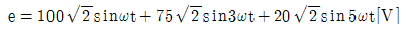
인 전압을 RL 직렬회로에 가할 때 제3고조파 전류의 실효치는? (단, R = 4[Ω],wL = 1[Ω]이다.)- 15[A]
- 15√2[A]
- 20[A]
- 20√2[A]
(정답률: 19%)
62. R = 100[Ω], L = 1[H]의 직렬회로에 직류전압 E =100[V]를 가햇을 때, t = 0.01[s]후의 전류 it[A]는 약 얼마인가?
- 0.362[A]
- 0.632[A]
- 3.62[A]
- 6.32[A]
(정답률: 19%)
63. 60[Hz], 120[V] 정격인 단상유도 전동기의 출력은 3[HP]이고 효율은 90[%]이며 역률은 80[%]이다. 역률을 100[%]로 개선하기 위한 병렬 콘덴서의 용량은 약 몇[VA]인가? (단, 1[HP] = 746[W]이다.)
- 1865[VA]
- 2252[VA]
- 2667[VA]
- 3156[VA]
(정답률: 12%)
64. ejwt의 라플라스 변환은?
- 1/s-jw
- 1/s+jw
- 1/s2+w2
- w/s2+w2
(정답률: 20%)
65. 다음과 같이 1개의 콘덴서와 2개의 코일이 직렬로 접속 된 회로에 300[Hz]의 주파수가 공진한다고 한다. C = 30[㎌], L1= L2= 4[mH]이면 상호인덕턴스 M 값은 약 몇 [mH]인가? (단, 코일은 동일 축 상에 같은 방향으로 감겨져 있다.)
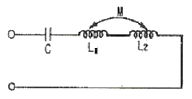
- 2.8[mH]
- 1.4[mH]
- 0.7[mH]
- 0.4[mH]
(정답률: 11%)
66. 4단자 정수 A, B, C, D 중에서 어드미턴스 차원을 가진 정수는?
- A
- B
- C
- D
(정답률: 23%)
67. 다음 회로를 테브낭(Thevenin)의 등가회로로 변환 할 때 테브낭의 등가저항 RT[Ω]와 등가전압 VT[V]는?
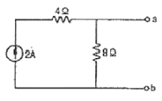
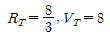
- RT=8, VT=12
- RT=8, VT=16
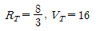
(정답률: 14%)
68. 정격전압에서 1[kW]의 전력을 소비하는 저항에 정격의 80[%]의 전압을 가할 때의 전력은?
- 320[W]
- 540[W]
- 640[W]
- 860[W]
(정답률: 22%)
69. 피상전력이 22[kVA]인 부하의 역률이 0.8이라면 무효 전력[Var]은?
- 18600[Var]
- 16600[Var]
- 15200[Var]
- 13200[Var]
(정답률: 20%)
70. 내부 임피던스가 0.3 + j2[Ω]인 발전기에 임피던스가 1.7 + j3[Ω]인 선로를 연결하여 전력을 공급한다. 부하 임피던스가 몇 [Ω]일 때 최대전력이 전달되겠는가?
- 2[Ω]
- √29[Ω]
- 2-j5[Ω]
- 2+j5[Ω]
(정답률: 21%)
71. 다음의 논리 회로를 간단히 하면?
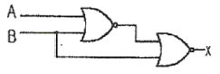
- X=AB
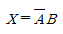
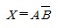
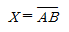
(정답률: 17%)
72. 다음 중 f(t)=e-at의 Z-변환은?
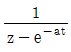
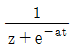
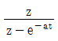
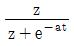
(정답률: 14%)
73.
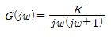
의 나이퀴스트 선도를 도시한 것은? (단, K>0 이다.)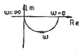
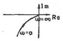
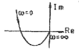
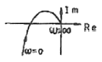
(정답률: 17%)
74. 특성방정식이 인 경우, S2+2S2+2S+40=0인 경우, 양의 실수부를 갖는 근은 몇 개인가?
- 0
- 1
- 2
- 3
(정답률: 16%)
75. 그림과 같은 신호흐름 선도에서 전달함수 C(s)/R(s)는?
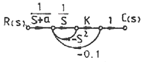
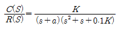
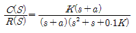
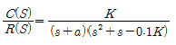
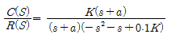
(정답률: 12%)
76. 다음 중
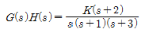
일 때 근 궤적의 수는?- 0
- 1
- 2
- 3
(정답률: 20%)
77. 상태방정식
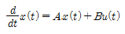
이라면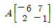
이라면 A의 고유값은?- 1, -8
- 1, -5
- 2, -8
- 2, -5
(정답률: 17%)
78. 그림과 같은 블록 선도로 표시되는 계는 무슨 형인가?
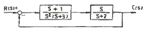
- 0형
- 1형
- 2형
- 3형
(정답률: 14%)
79. 다음 중 어떤 계통의 피라미터가 변할 때 생기는 특성방정식의 근의 움직임으로 시스템의 안정도를 판별 하는 방법은?
- 보드 선도법
- 나이퀴스트 판별법
- 근 궤적법
- 루드-후르비쯔 판별법
(정답률: 16%)
80. 그림과 같은 벡터 궤적을 갖는 계의 주파수 전달함수는?
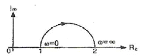
- 1/jw+1
- 1/j2w+1
- jw+1/j2w+1
- j2w+1/jw+1
(정답률: 11%)
5과목: 전기설비기술기준 및 판단기준
81. 금속 덕트 공사에 의한 저압 옥내배선 공사 중 적합하지 않은 것은?
- 금속 덕트에 넣은 전선의 단면적의 합계가 덕트의 내부 단면적의 20[%] 이하가 되게 하여야 한다.
- 덕트 상호간은 견고하고 전기적으로 완전하게 접속 하여야 한다.
- 덕트를 조영재에 붙이는 경우에는 덕트의 지지점간 거리를 8[m] 이하로 하여야 한다.
- 저압 옥내배선의 사용전압이 400[V] 미만인 경우 덕트에 제3종 접지공사를 하여야 한다.
(정답률: 21%)
82. 가공 전선로의 지지물에 시설하는 지선의 시설기준에 대한 설명 중 옳은 것은?
- 지선의 안전율은 2.5 이상일 것
- 소선 4조 이상의 연선일 것
- 지중 부분 및 지표상 100[cm]까지의 부분은 철봉을 사용할 것
- 도로를 횡단하여 시설하는 지선의 높이는 지표상 4.5[m] 이상으로 할 것
(정답률: 21%)
83. 쇼윈도내의 배선에 사용전압 400[V] 미만에 사용하는 캡타이어 케이블의 단면적은 최소 몇 [mm2]인가?
- 1.25
- 1.0
- 0.75
- 0.5
(정답률: 24%)
84. 가공전선로에 사용되는 특고압 전선용의 애자장치에 대한 갑종풍압하중은 그 구성재의 수직투명면적 1m2에 대한 풍압으로 몇 Pa를 기초로 계산하여야 하는가?
- 588
- 745
- 660
- 1039
(정답률: 16%)
85. 사용 전압이 154kV인 가공 송전선의 시설에서 전선과 식물과의 이격거리는 일반적인 경우에 몇 [m] 이상으로 하여야 하는가?
- 2.8
- 3.2
- 3.6
- 4.2
(정답률: 18%)
86. 백열전등 또는 방전등 및 이에 부속하는 전선은 사람이 접촉할 우려가 없는 경우 대지 전압은 최대 몇[V]인가?
- 100V
- 150V
- 300V
- 450V
(정답률: 23%)
87. 합성수지관공사에 의한 저압 옥내배선에 대한 설명으로 옳은 것은?
- 합성수지관 안에 전선의 접속점이 있어도 된다.
- 전선은 반드시 옥외용 비닐절연전선을 사용한다.
- 기계적 충격을 받을 우려가 없도록 시설하여야 한다.
- 관의 지지점간의 거리는 3m 이하로 한다.
(정답률: 20%)
88. 가공전선로의 지지물에 시설하는 통신선과 고압 가공 전선 사이의 이격거리는 몇 [cm] 이상이어야 하는가?
- 120
- 100
- 75
- 60
(정답률: 18%)
89. 일정 용량 이상의 조상기에는 그 내부에 고장이 생긴 경우에 자동적으로 이를 전로로부터 차단하는 장치를 하여야 하는데 그 용량은 몇 [kVA] 이상인가?
- 15000
- 20000
- 35000
- 40000
(정답률: 25%)
90. 154kV 가공전선로를 제1종 특고압보안공사에 의하여 시설하는 경우 사용 전선은 인장강도 58.84kN 이상의 연선 또는 단면적 몇 [mm2]의 경동연선이어야 하는가?
- 38
- 55
- 100
- 150
(정답률: 15%)
91. 빙설이 많은 지방의 특고압 가공 전선 주위에 부착되는 빙설의 두께 [mm]와 비중은?
- 6[mm], 0.9
- 6[mm], 1.0
- 8[mm], 0.9
- 8[mm], 1.0
(정답률: 15%)
92. 시가지에 시설하는 통신선을 특고압 가공전선로의 지지물에 시설하고자 하는 경우 통신선은?
- 2.6mm 이상의 절연전선
- 4mm 이상의 절연전선
- 5mm 이상의 절연전선
- 5.5mm 이상의 절연전선
(정답률: 14%)
93. 터널내에 3300V 전선로를 케이블공사로 시행하려고 한다. 케이블을 조영재의 옆면 또는 아래면에 따라 붙일 경우에 케이블의 지지점간의 거리는 몇 [m]이하로 하여야 하는가?
- 1
- 1.5
- 2
- 2.5
(정답률: 14%)
94. 특고압 계기용변성기의 2차측 전로의 접지공사는?
- 제1종 접지공사
- 제2종 접지공사
- 제3종 접지공사
- 특별 제3종 접지공사
(정답률: 17%)
95. 전식 방지를 위한 귀선의 시설 방법에 해당되지 않는 것은?
- 귀선은 부극성으로 할 것
- 이음매 하나의 저항은 그 레일의 길이 5[m]의 저항에 상당하는 값 이하인 것
- 특수한 곳을 제외하고 귀선용 레일은 길이 30[[m] 이상일 것
- 용접용 본드는 단면적 22[mm2] 이상, 길리 60[cm] 이상의 연동 연선일 것
(정답률: 11%)
96. 특고압 가공전선로의 지지물로 사용하는 목주의 풍압하중에 대한 안전율은 얼마 이상이어야 하는가?
- 1.2 이상
- 1.5 이상
- 2.0 이상
- 2.5 이상
(정답률: 14%)
97. 변압기에 의하여 특고압전로에 결합되는 고압전로에는 사용전압의 3배 이하의 전압이 가하여진 경우에 방전하는 피뢰기를 어느 곳에 시설할 때, 방전장치를 생략할 수 있는가?
- 변압기의 단자
- 변압기 단자의 1극
- 고압전로의 모선의 각상
- 특고압 전로의 1극
(정답률: 20%)
98. 사용전압이 20kV인 변전소에 울타리·담 등을 시설하고자 할 때 울타리·담 등의 높이는 몇 [m] 이상이어야 하는가?
- 1
- 2
- 5
- 6
(정답률: 14%)
99. 특고압 전로와 고압 전로를 결합하는 변압기에 설치하는 방전장치의 접지저항은 몇 [Ω]이하로 유지하여야 하는가?
- 2
- 3
- 5
- 10
(정답률: 18%)
100. 발전기, 전동기, 조상기, 기타 회전기(회전 변류기 제외)의 절연 내력 시험시 전압은 어느 곳에 가하면 되는가?
- 권선과 대지사이
- 외함부분과 전선사이
- 외함부분과 대지사이
- 회전자와 고정자사이
(정답률: 21%)